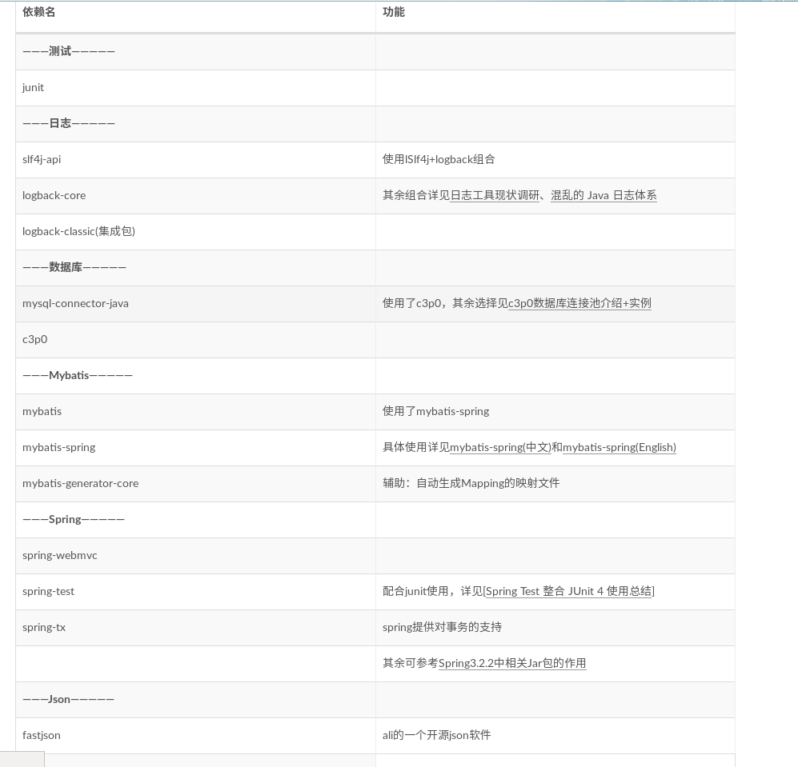

自己对于Maven依赖一直有些迷糊,每次都是之间复制配置文件,还是需要有所了解,慢慢做一个总结
Spring必要依赖
总体上来说必须要有的一共是7个依赖:
- Spring核心依赖:spring-core,spring-beans,spring-context
- SpringDao依赖:spring-jdbc,spring-tx
- SPring web依赖:spring-web,spring-webmvc
- Spring test依赖:spring-test
常见依赖的具体功能
- spring-core:包含Spring框架基本核心工具类型.Spring其他的组件都需要使用这个包里面的类.外部依赖commons logging(Log4J)
- spring-beans:所有应用都要用到,包含配置文件,创建和管理bean以及进行Inversion of Control/Dependency Injection(IOC/DI)相关操作的所有类.外部依赖spring-core
- spring-aop:对使用Spring AOP特性是所需要的所有类进行支持.基于AOP的Spring特性如声明事务管理也包含在其中.外部依赖spring-core.soring-beans.
- spring-context:为Spring核心提供了大量的扩展.可以找到Spring ApplicationContexttext所需的所有类,JDNI(Java Naming and Directory Interface)所需全部类.instrumentation组件以及校验Validation方面相关的类.
- spring-dao:这个jar 文件包含Spring DAO、Spring Transaction 进行数据访问的所有类.为了使用声明型事务支持，还需在自己的应用里包含spring-aop.jar.外部依赖spring-core，spring-aop， spring-context.
- spring-jdbc:这个jar 文件包含对Spring 对JDBC 数据访问进行封装的所有类.外部依赖spring-beans，spring-dao
- spring-context-support:包含支持缓存Cache（ehcache）、JCA、JMX、 邮件服务（Java Mail、COS Mail）、任务计划Scheduling（Timer、Quartz）方面的类.以前的版本中应该是这个：spring-support.jar这个jar 文件包含支持UI模版（Velocity，FreeMarker，JasperReports），邮件服务，脚本服务(JRuby)，缓存Cache（EHCache），任务计划Scheduling（uartz）方面的类.
- spring-web:这个jar 文件包含Web 应用开发时，用到Spring 框架时所需的核心类，包括自动载入Web Application Context 特性的类、Struts 与JSF 集成类、文件上传的支持类、Filter 类和大量工具辅助类.外部依赖spring-context, Servlet API.
- spring-webmvc:这个jar 文件包含Spring MVC 框架相关的所有类.包括框架的Servlets，Web MVC框架，控制器和视图支持.当然，如果你的应用使用了独立的MVC 框架，则无需这个JAR 文件里的任何类.外部依赖spring-web.spring-support.
- spring-orm:包含Spring对DAO特性集进行了扩展，使其支持iBATIS、JDO、OJB、TopLink，因为Hibernate已经独立成包了，现在不包含在这个包里了.这个jar文件里大部分的类都要依赖spring-dao.jar里的类，用这个包时你需要同时包含spring-dao.jar包.
- spring-oxm:Spring 对Object/XMl的映射支持,可以让Java与XML之间来回切换.
- spring-tx:以前是在这里org.springframework.transaction为JDBC、Hibernate、JDO、JPA、Beans等提供的一致的声明式和编程式事务管理支持.
1 | <!-- Spring依赖 --> |
Mybatis
要完成使用MyBatis访问MySQL数据库，需要添加一些依赖包，包含MyBatis3，连接驱动，JUnit，Log4j2等1
2
3
4
5
6
7
8
9
10
11
12
13
14
15
16
17<dependency>
<groupId>org.mybatis</groupId>
<artifactId>mybatis</artifactId>
<version>3.4.7-SNAPSHOT</version>
</dependency>
<!-- junit.jar -->
<dependency>
<groupId>junit</groupId>
<artifactId>junit</artifactId>
<version>4.10</version>
</dependency>
</dependencies>
<dependency>
<groupId>mysql</groupId>
<artifactId>mysql-connector-java</artifactId>
<version>5.1.29</version>
</dependency>
SSM必要依赖
在别人博客找了一份

这里重点提一下spring-webmvc，这里导入的是4.3.13.RELEASE，同时，还会隐式导入:
- spring-beans
- spring-context
- spring-aop
- spring-core
- spring-web
- spring-expression
- commons-logging
- spring-context-support
- spring-oxm
- javax.servlet-api
等依赖，所以，如果你导入了spring-webmvc，这些依赖就不需要重复写一遍了。